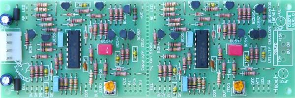
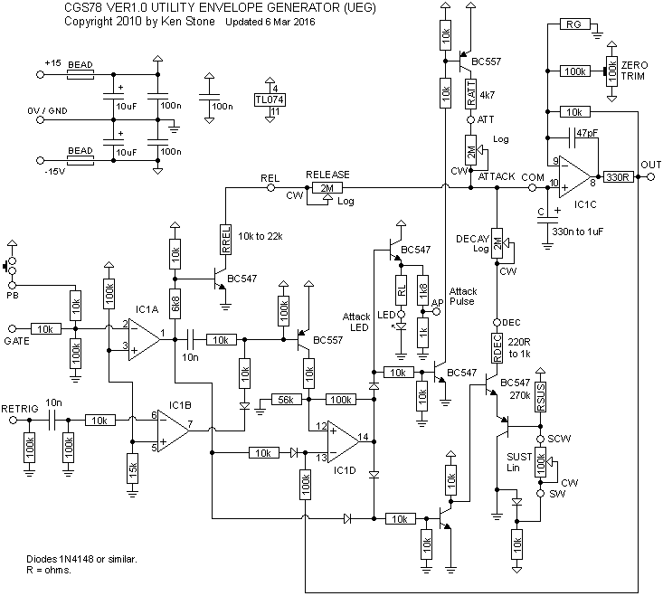
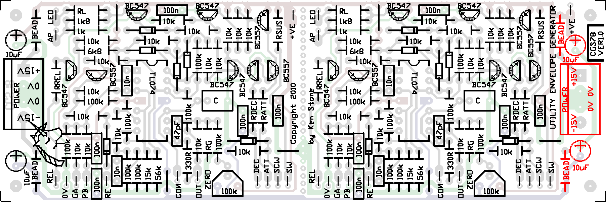
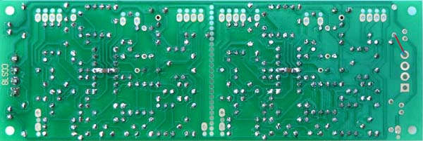

|

Utility Envelope Generator
for music synthesizers.
This module is a very standard logarithmic response ADSR envelope generator. It is not voltage controlled. It is for use where a basic envelope generator is adequate. There are two identical envelope generators on the PCB.
How to use this module:
Connect your external GATE signal to the Gate input. Adjust the pots as required. Rotating the pots clockwise will increase the time of any particular stage, or in the case of SUSTAIN increase voltage of the sustain portion of the cycle. The output is exponential due to the basic resistor/capacitor configuration used in the timing cycle.
- A push button is supplied to provide a manual GATE signal.
- Upon the GATE input going HIGH the UEG immediately begins it's ATTACK cycle. This will continue until one of the following occurs:
- the GATE input returns to LOW. If this occurs, the UEG immediately goes into its RELEASE cycle, the output decreasing to zero. Thus with longer attack times set, a short GATE signal will produce an envelope with a reduced output, which can be useful for expression.
- the attack peak is reached (approximately 5 volts). When this occurs, the UEG immediately goes into its DECAY cycle, where the output will decrease until it reaches the voltage set by the SUSTAIN pot. If this is zero, the output will drop to zero, effectively terminating the cycle. If it is above zero, this voltage will be held as long as the GATE input is HIGH. When the GATE input returns to LOW, the UEG immediately goes into its RELEASE cycle, the output decreasing to zero.
- The retrigger input (RETRIG) restarts the ATTACK portion of the cycle if the GATE input is HIGH. It can be used to modulate the ATTACK, DECAY, SUSTAIN portion of the cycle. A rapid burst of pulses on this input can push the envelope higher than the usual peak if the ATTACK is set to a sufficiently short length.
- The LED and ATTACK PULSE output are active during the ATTACK part of the cycle. This allows the UEG to be used as a gate to pulse converter, the pulse length controlled by the setting of the ATTACK pot.
- The UEG CANNOT be set to self oscillate or cycle.
A little on how it works:

The schematic of the Utility Envelope Generator.
IC1A is the GATE detector and is set to detect signals over about 2 volts. It's output falls when a gate signal is present. This turns off the RELEASE circuit and trips the ATTACK/DECAY bistable IC1D. This "bistable" is actually a schmitt trigger that also servers as the peak detector for the ATTACK period.
IC1C is the output buffer. It follows the voltage on the main timing capacitor C. Its signal is fed back into IC1D. When the ATTACK peak voltage is reached (approximately 5V when running from +/-15V power rails) the bistable resets, shutting off the ATTACK circuit and turning on the DECAY circuit.
The DECAY circuit discharges capacitor C until it reaches the voltage set by the SUSTAIN pot.
When the GATE input goes LOW the bistable is set, if it hasn't already been set by other circuit elements, ready for the next ATTACk cycle, and the RELEASE circuit is turned on, and discharges capacitor C.
Construction


| The rear of the VER1.0 PCB. The line in RED indicates a missing track, which is only needed if the board is being separated into two sub-boards, and/or the power connector at that end is being used. Note the decoupling capacitors soldered between the power pins of the two chips. Regular monoblock capacitors would be easier to install than the 1206 SMD devices used here, due to the wide gap between the pads.
|
Before you start assembly, check the board for etching faults. Look for any shorts between tracks, or open circuits due to over etching. Take this opportunity to sand the edges of the board if needed, removing any splinters or rough edges.
When you are happy with the printed circuit board, construction can proceed as normal, starting with the resistors first, followed by the IC sockets if used, then moving onto the taller components.
Take particular care with the orientation of the polarized components, the electrolytics, diodes, transistors and ICs.
When inserting the ICs in their sockets, take care not to accidentally bend any of the pins under the chip. Also, make sure the notch on the chip is aligned with the notch marked on the PCB overlay.
It is a good idea to test each transistor before you use it. Cheap multimeters often have a suitable tester in them. The purpose of this test is to determine the pin-out of the transistor, because increasingly frequently "rogue" transistors are being sold - transistors with their pinout reversed with respect to others bearing the same part number.
There are several resistors shown on the board as designators. The values given here are recommended starting points for experimentation. Use the BOLD values if you do not wish to experiment. These are their functions:
| Designator | Function | Recommended Value |
| RATT | Minimum Attack rate | At least 4k7 with a C=1uF. 10k-15k with C=330n. Lower than recommended will cause overshooting at the faster settings. |
| RDEC | Minimum Decay rate | 220R to 1k (or more). 220R is very fast. |
| RSUS | Maximum Sustain voltage | Ideally select this so sustain maximum voltage is the same as the peak voltage of the attack. 270k. The only reason this value would need to be changed is to match a pot of a different value. |
| RREL | Minimum Release rate | 10k to 22k |
| RG | Output stage gain | Not fitted for 5V output range (0 to 5V). 10k for 10 volt output range (0 to 10V). This does mess up the feedback to the detector stage, turning the decay stage into a second attack, if set high enough. To cure this try putting a 10k/10k voltage divider between the output and ground, and connecting the 100k resistor to that instead of the output. (untested) |
| RL | LED current | 33k for modern high-brightness LEDs. 1k for standard LEDs. |
| C | Main timing capacitor | 330n (finer control on pots) to 1uF (greater range) |
| PAD | Function |
| COM | ATT/DEC/REL pot common (wipers) |
| ATT | Attact pot CCW end |
| DEC | Decay pot CCW end |
| SCW | Sustain pot CCW end |
| SW | Sustain pot wiper |
| REL | Release Pot CCW end |
| PB | Manual Gate Push Button |
| +VE | Other contact of Push Button |
| GA | Gate input |
| RE | Retrigger input |
| OUT | Envlope out |
| AP | Attack Pulse out |
| LED | to LED Anode. Cathode goes to 0V |
| 0V | 0V/GND connection for LED and jacks. |
Set Up
With no gate input, adjust the ZERO trimpot until the output sits at 0 volts.
Notes:
- 1M pots can be substituted for the 2M2 pots if the value of C is doubled.
- 330R refers to 330 ohms. 100n = 0.1 uF.
- This circuit has also been tested with 2N3904 and 2N3906 transistors.
- While untested, the module should work on +/-12 volts.
- PCB info: 6" x 2" with 3mm mounting holes 0.15" in from the edges.
- Please email me if you find any errors.
| Part | Quantity |
| Capacitors |
|---|
| 47pF | 2 |
| 10n | 4 |
| 100n (decoupling) | 12 |
| C * | 2 |
| 10uF 25V | 2 (4) |
| Resistors |
|---|
| 330R | 2 |
| 1k | 2 |
| 1k8 | 2 |
| 6k8 | 2 |
| 10k | 34 |
| 15k | 2 |
| 56k | 2 |
| 100k | 16 |
| 100k trim | 2 |
| 100k lin pot | 2 |
| 2M2 log pot | 6 |
| RATT * | 2 |
| RDEC * | 2 |
| RG * | 2 |
| RREL * | 2 |
| RSUS * | 2 |
| RL * | 2 |
| * See text |
| Semi's |
|---|
| 1N4148 | 12 |
| BC547 (or sim) | 10 |
| BC557 (or sim) | 6 |
| TL074 | 2 |
| LED | 2 |
| Misc. |
|---|
| Ferrite Bead (or 10R resistor) | 2 (4) |
| 0.156 4 pin connector | 1 (2) |
| CGS78 PCB | 1 |
|
|
Parts list
This is a guide only. Parts needed will vary with individual constructor's needs.
If anyone is interested in buying these boards, please check the PCBs for Sale page to see if I have any in stock.
Can't find the parts? See the parts FAQ to see if I've already answered the question. Also see the CGS Synth discussion group.
Article, art & design copyright 2010 by Ken Stone
Modular Synth Home Disclaimer
|